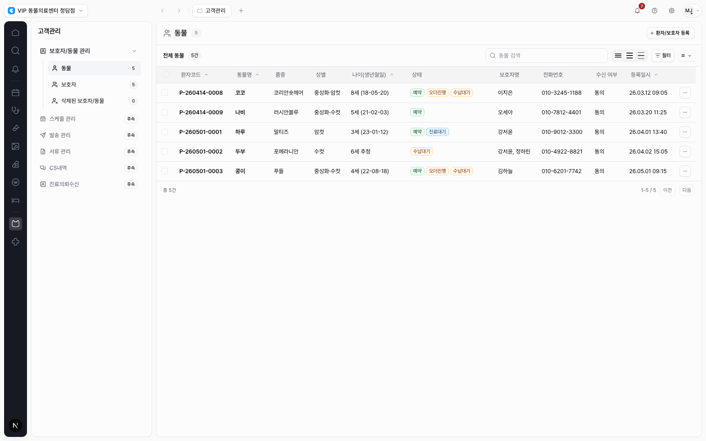
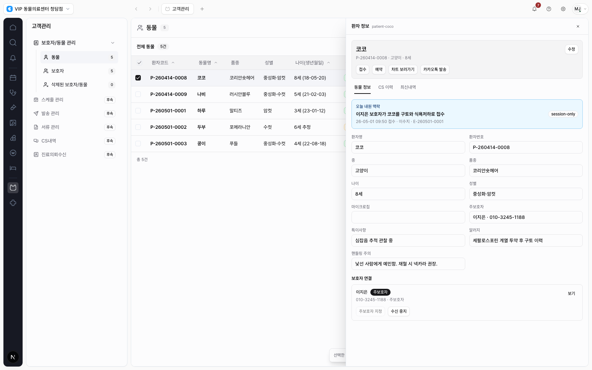
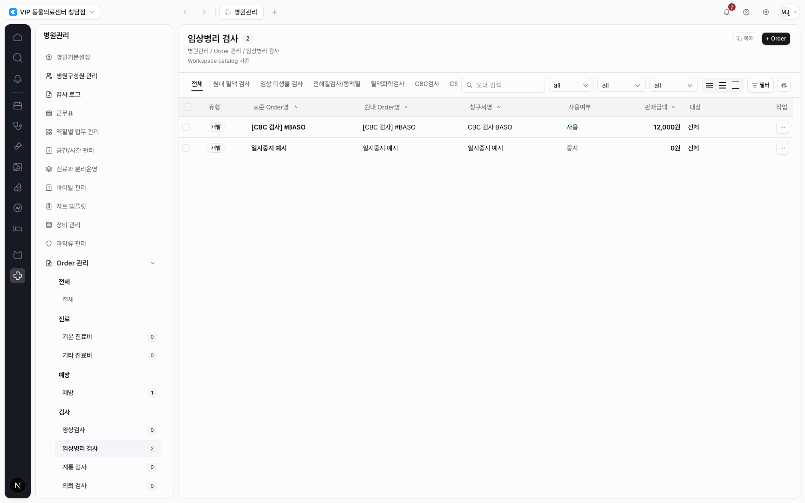
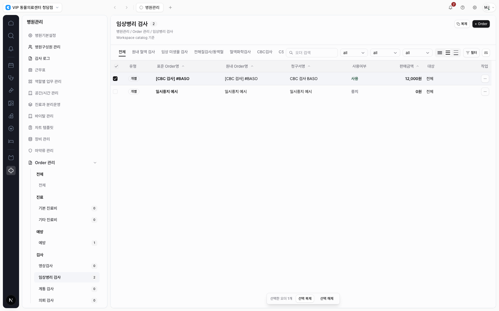

고객/병원관리 테이블 레이아웃 구현 결과
기존 제안서의 결정을 실제 화면에 반영했다. 고객관리 테이블은 내부 카드형 제목 영역을 제거했고, 병원관리 Order 테이블은 탭과 검색/필터/표시 옵션을 같은 위계 행으로 정리했다.
반영 내용
고객관리
- 콘텐츠 헤더에는 페이지 정체성과 등록 CTA만 남겼다.
- 검색, 덴시티, 필터, 컬럼 옵션을 테이블 스코프 행 오른쪽으로 이동했다.
- 테이블을 감싸던 둥근 카드/그림자 구조를 제거했다.
- 체크박스 선택 시 하단 bulk bar가 뜨고, 행 클릭은 drawer를 연다.
병원관리
- 헤더에는 복제와
+ Order같은 페이지 액션만 유지했다. - 실제 섹션 탭은 왼쪽, 검색/필터/표시 옵션은 같은 행 오른쪽에 배치했다.
- 긴 컨트롤 바를 없애고 검색 폭과 컬럼 버튼을 간략화했다.
- 기존 Order 선택 bulk bar 패턴은 유지했다.
구현 파일
src/features/customer/module.tsxsrc/features/hospital-admin/module.tsxtests/app-shell.spec.tsdocs/work/design-system/DESIGN-SYSTEM-PR-050-customer-hospital-table-content-layout.md
검증
npm run lint통과. 기존 경고 5개는 이번 변경 범위 밖이다.npx tsc --noEmit통과.PLAYWRIGHT_BASE_URL=http://127.0.0.1:3010 npx playwright test tests/app-shell.spec.ts --grep "orders module renders|customer table uses|hospital order table keeps"통과.npm run docs:check통과.
적용 화면



